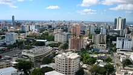

Economy of the Dominican Republic
|  Santo Domingo is the capital and financial center of the Dominican Republic | |
| Currency | 1 Dominican Peso (RD$) = 100 Centavos |
|---|---|
| Calendar year | |
Trade organizations | WTO, CAFTA-DR |
Country group |
|
| Statistics | |
| GDP | |
| GDP rank | |
GDP growth |
|
GDP per capita | |
GDP per capita rank | |
GDP by sector | agriculture: 5.5%; industry: 33.8%; services: 60.8% (2017 est.) |
| 3.564% (2018)[3] | |
Population below poverty line | 30.5% (2016 est)[5][6] 23.9% (2021 est)[7] |
| |
Labor force | 5.278 million (2022 est.) |
Labor force by occupation | agriculture: 14.6%; industry: 22.3%; services: 63.1% (2005) |
| Unemployment | 7.1% (2022 est.) |
Main industries | ferronickel and gold mining, textiles, cement, tobacco, and sugar production, tourism |
| External | |
| Exports | $11 billion (2019 est.) |
Export goods | ferronickel, sugar, gold, silver, coffee, cocoa, tobacco, meats, consumer goods |
Main export partners | (2017 est.)[10] |
| Imports | $20 billion (2019 est.) |
Import goods | foodstuffs, petroleum, cotton and fabrics, chemicals and pharmaceuticals |
Main import partners | |
FDI stock | $42 billion (31 December 2019 est.) |
Gross external debt | $29.69 billion (31 December 2017 est.) |
| Public finances | |
| 37.7% of GDP (2017 est.) | |
| Revenues | $14.10 billion (2021 est.) |
| Expenses | $16.60 billion (2021 est.) |
| BB− (Domestic) BB− (Foreign) BB (T&C Assessment) (Standard & Poor's)[12] | |
| $14.5 billion (March 2022 est.) | |
All values, unless otherwise stated, are in US dollars. | |
The economy of the Dominican Republic is the seventh largest in Latin America, and is the largest in the Caribbean and Central American region. The Dominican Republic is an upper-middle income[13] developing country with important sectors including mining, tourism, manufacturing (medical devices, electrical equipment, pharmaceuticals, and chemicals), energy, real estate, infrastructure, telecommunications and agriculture.[14][15] The Dominican Republic is on track to achieve its goal of becoming a high-income country by 2030, and is expected to grow 79% in this decade.[16] The country is the site of the single largest gold mine in Latin America, the Pueblo Viejo mine.[17][18] Although the service sector is currently the leading employer of Dominicans (due principally to growth in tourism and free-trade zones), agriculture remains an important sector in terms of the domestic market and is in second place (behind mining) in terms of export earnings. Tourism accounts for more than $7.4 billion in annual earnings in 2019.[19] Free-trade zone earnings and tourism are the fastest-growing export sectors. A leading growth engine in the Free-trade zone sector is the production of medical equipment for export having a value-added per employee of $20,000 USD,[20] total revenue of $1.5 billion USD, and a growth rate of 7.7% in 2019. The medical instrument export sector represents one of the highest-value added sectors of the country's economy, a true growth engine for the country's emerging market.[21] Remittances are an important sector of the economy, contributing $8.2 billion in 2020.[22] Most of these funds are used to cover household expenses, such as housing, food, clothing, health care and education. Secondarily, remittances have financed businesses and productive activities.[23] Thirdly, this combined effect has induced investment by the private sector and helps fund the public sector through its value-added tax. The combined import market including the free-trade-zones amounts to a market of $20 billion a year in 2019. The combined export sector had revenues totaling $11 billion in 2019.[19] The consumer market is equivalent to $61 billion in 2019.[24] An important indicator is the average commercial loan interest rate, which directs short-term investment and stimulates long-term investment in the economy. It is currently 8.30%, as of June 2021.[25]
The Dominican Republic's most important trading partner is the United States (over 40% of total commercial exchange; over $12 billion in trade). Other major trade partners are China (over $3 billion in trade), Switzerland (over $1 billion), Puerto Rico (over $800 million), Mexico (over $700 million), Haiti (over $700 million), Spain (over $700 million), the Netherlands (over $700 million), Canada (over $600 million), Brazil (over $500 million), and Germany (over $500 million), in that quantitative order.[26] The country exports free-trade-zone manufactured products (medical devices, electrical equipment, pharmaceuticals, and chemicals), gold, nickel, agricultural products, liquor, cocoa beans, silver, and sauces and seasonings. It imports petroleum, industrial raw materials, capital goods, and foodstuffs. On 5 September 2005, the Congress of the Dominican Republic ratified a free trade agreement with the U.S. and five Central American countries, the Dominican Republic – Central America Free Trade Agreement (CAFTA-DR). CAFTA-DR entered into force for the Dominican Republic on 1 March 2007. The total stock of U.S. foreign direct investment (FDI) in Dominican Republic as of 2019 was U.S. $42 billion, much of it directed to the energy, tourism, real estate, manufacturing, infrastructure and the telecommunications sectors.[14] In 2019 the foreign direct investment stock amounted to $42 billion a significant growth in the last decade and a half.[14] In 2020, during the COVID-19 pandemic, foreign direct investment flows in the Dominican Republic had remained strong at $2.5 billion added to the stock in that year. Having grown to an estimated $44.5 billion, and growing more than ten-fold since 2006 when the liberalization efforts began.[22]
An important aspect of the Dominican economy is the Free Trade Zone industry (FTZ), which made up U.S. $6.2 billion in Dominican exports for 2019.[19] Reports show, however, that the FTZs lost approximately 60,000 between 2005 and 2007 and suffered a 4% decrease in total exports in 2006. The textiles sector experienced an approximate 17% drop in exports in 2006 due in part to the appreciation of the Dominican peso against the dollar, Asian competition following expiration of the quotas of the Multi-Fiber Arrangement, and a government-mandated increase in salaries, which should have occurred in 2005 but was postponed to January 2006. Lost Dominican business was captured by firms in Central America and Asia. The tobacco, jewelry, medical, and pharmaceutical sectors in the FTZs all reported increases for 2006, which offset textile and garment losses. Industry experts from the FTZs expected that entry into force of the CAFTA-DR agreement would promote substantial growth in the FTZ sector in 2007. By the end of the last decade-and-a-half the free-trade-zone sector has rebounded and surpassed the former amounts of $4.5 billion in 2006 to grow to $6.2 billion by 2019.
Primary Industries
[edit]Agriculture
[edit]In 2018, the Dominican Republic produced 644 thousand tons of avocado (it is the 2nd largest producer in the world), 1 million tons of papaya (it is the 4th largest producer in the world), 5.2 million tons of sugarcane, 2.1 million tons of banana, 85 thousand tons of cocoa, 442 thousand tons of palm oil, 407 thousand tons of pineapple, 403 thousand tons of coconut, 627 thousand tons of rice, 160 thousand tons of cassava, 136 thousand tons of orange, in addition to from smaller productions of other agricultural products such as potato, lemon, melon, onion and yam.[27]
With almost 80% of the total land area suitable for crop production and about 17% of the labor force engaged in farming, agriculture remains the primary occupation, accounting for 11% of GDP in 2001. Value of agricultural output grew at an average annual rate of 7.1% during 1968–73, but since 1975 the sector has been hampered by droughts (1975, 1977, and 1979), hurricanes (in 1979 and 1980), and slumping world prices and quota allocations for sugar (since 1985). In 1999, agricultural production was 0.4% higher than during 1989–91. The fertile Cibao Valley is the main agricultural center. In 1998, arable land totaled 1,020,000 hectares (2,500,000 acres); with land under permanent crops at 480,000 hectares (1,200,000 acres).
After Cuba, the Dominican Republic is the second-largest Caribbean producer of sugarcane, the nation's most important crop. The State Sugar Council operates 12 sugar mills and accounts for about half of total production. Other large producers are the privately owned Vicini, with three mills, and Central Romana Corporation, whose mill is the largest in the country. Sugar is grown in the southeastern plains, around Barahona & on the North Coast Plain. In 1999, sugar production was 4.4 million tons, down from an average of 7.1 million tons during 1989–1991. Output of sugar has declined annually since 1982, and land is gradually being taken out of sugar production and switched to food crops. Production of raw sugar rose from 636,000 tons in 1990 to 813,000 tons in 1997 but fell to 374,000 tons in 1999.
Part of the crop was destroyed by hurricanes in 1979 and 1980, and 1979–80 production was only 670,000 bags (40,200 tons). Although production was usually about 57,000–59,000 tons annually in the 1980s, the acreage harvested declined from 157,000 hectares (390,000 acres) in the early 1980s to 139,000 hectares (340,000 acres) in 1999, indicating a greater yield per acre. Coffee production in 1999 was estimated at 35,000 tons; exports of coffee in 2001 generated $11 million. Cocoa and tobacco are also grown for export. Dominican Republic is one of the top 10 major producer and exporter of cocoa in the world. Cocoa is also grown in the Cibao Valley around San Francisco de Macoris. Tobacco is also grown in the Cibao Valley, but around Santiago. In 1999, production of cocoa beans was 26,000 tons and of tobacco, 35,000 tons. Rice is grown around Monte Cristi & San Francisco de Macoris. Banana production in 1999 was 432,000 tons. Production of other crops in 1999 (in thousands of tons) included rice, 563; coconuts, 184; cassava, 127; tomatoes, 281; pulses, 69; dry beans, 26; eggplants, 7; and peanuts, 2.
Livestock farming
[edit]In 2001, Dominican livestock included 187,000 goats and 106,000 sheep. There were also about 2.1 million head of cattle, 60% for beef and 40% for dairy. The hog population was decimated by African swine fever in 1978, decreasing from 400,000 in 1978 to 20,000 in 1979; by 2001, however, it was 565,000. Poultry is the main meat source because it is cheaper than beef or pork. Poultry production relies on imports of feed grain from the United States. In 2001, 203,000 tons of poultry meat were produced, along with 71,000 tons of beef and 420,000 tons of milk.
Fishing
[edit]In 2017 the total marine production was 18,000 metric tons.[28] Marlin, barracuda, kingfish, mackerel, tuna, sailfish, and tarpon are found in the Monte Cristi Bank and Samaná Bay, which also supports bonito, snapper, and American grouper.
Forestry
[edit]About 28.4% of the total land area consisted of forests and woodlands in 2000. Round wood production in 2000 totaled 562,000 cu m (19.8 million cu ft). Timber is cut for land clearing for the use of agriculture. There are important national parks protecting the natural resources and aquifers of the country.
Mining
[edit]In 2019, the country was the 9th largest world producer of nickel.[29] The country had almost zero production of gold until 2011, where it grew exponentially. In 2016 the country produced almost 38 tons.[30] The country had almost zero production of silver until 2008, where it grew exponentially. In 2017 the country produced 147 tons.[31]
Ferronickel was the country's leading export commodity and third-leading industry. Nickel is mined at Bonao. In 2000, nickel production was 39,943 tons, ranking tenth in the world, a decrease from 49,152 in 1997. Currently the most important mineral export is gold.
Production of gold in the Pueblo Viejo mine is the largest gold producing mine in Latin America, and fourth most productive mine in the world producing a total of 30,100 kg of gold in 2018.[32] The extraction by a foreign company of gold at one of the largest mines in the Western Hemisphere has startled and concerned a part of the country who believe that the natural resource should be extracted by local companies and not foreign. Some groups began to protest against Barrick Gold in 2009 and 2010. In 2019 gold is one of the largest exports of the country totaling $1.6 billion and has helped to balance the commodity current account balance.[33]
Production of bauxite, traditionally the principal mining product, ceased in 1992. The Aluminum Co. of America (Alcoa) mined bauxite between 1959 and 1983, when it turned its concession over to the state. Production in 1991 dropped 92% from the previous year, as a presidential decree suspended mining operations at the largest mine, in response to increasing fears of deforestation, although reforestation of mined areas was in progress. Output averaged 1 million tons each year.
The country was one of the few sources of amber in the Western Hemisphere. Salt Mountain, a 16 km block of almost solid salt west of Barahona, was the world's largest known salt deposit. There were also large deposits of gypsum near Salt Mountain, making the Dominican Republic one of three sources of gypsum in the Caribbean. The country also produced hydraulic cement, limestone, marble, and sand and gravel. Substantial lignite deposits were found in the early 1980s. Deposits of copper and platinum are also found in the country.
Industry
[edit]The industrial sector contributed an estimated 33.8 percent to the country's GDP in 2017, led by mining and the manufacture of goods for export to the United States, Europe and Asia. To a lesser extent, there is the manufacture of food products, consumer non-durables, and building materials for the local market. The sector employed 20.8 percent of the workforce in 2014.
About 500 companies in the Dominican Republic manufacture goods primarily for the North American market. Situated in 50 industrial free zones around the country, these mostly foreign-owned corporations take advantage of generous tax and other financial inducements offered by the government to businesses that operate within the zones. Approximately 200,000 people, or about 8 percent of the workforce, are employed in this sector. They mostly produce clothing, electronic components, footwear, and leather goods, which are assembled. The raw materials or semi-manufactured goods are usually imported duty-free from other emerging markets (electronic parts are imported from industrialized Puerto Rico) and assembled in the free trade zones. Products include cosmetics, pharmaceuticals, textiles, perfumes & foodstuffs. The value of free-trade-zone exports amounted to US$6.2 billion in 2019, while their imports of intermediate products amounted to US$4 billion.[19]
Other, more traditional manufacturing is based on sugar refining, cement, iron and steel production, and food processing. Rum is a significant export commodity, and beer and cigarettes are manufactured for local consumption. Most industry of this sort is located around the working-class perimeter of Santo Domingo and other large towns.
Tertiary industries
[edit]Services were estimated to contribute 61.4% of the GDP in 2017 and employs 64.7% of the population.[34]
Tourism
[edit]Since the mid-1980s the tourism sector has become one of the country's most important sources of foreign exchange, and more popular tourist destinations. The country is famous for its favorable location in the Caribbean, tropical climate, beaches, and the restored Spanish colonial architecture. Many foreign investors have and continue to be encouraged to invest here to build and expand resorts and airports around the coasts.[35] During this same period, tourism displaced sugar as the main source of the country's earnings, and by 1997 it was generating more than half of the country's total foreign exchange.[36] In 2019 it generated one-third of the total foreign exchange for the country.
Tourism is the single biggest revenue earner, growing from humble beginnings in 1980 to more than $7.4 billion by 2019.[19] Successive governments have invested heavily in tourism development, creating upgraded airports and other infrastructure. The number of tourist amounted to 6.4 million tourists arriving in the country in 2019. Most come from Europe, with about 25 percent originating from the United States or Canada. The country now has almost 70,000 hotel rooms, more than any other Caribbean country. About 50,000 Dominicans are directly employed in this sector, mostly working in hotels, and another 110,000 are indirectly employed as taxi drivers, tour guides, or tourist-shop staff. Most tourists visit the Dominican Republic on account of its beaches, but there is an expanding eco-tourism and outdoor activity sector, focused on the country's mountains and wildlife.
Although tourism generates large revenues, some scholars and activists argue that the development of tourism also has high impacts on many socioeconomic aspects. For instance, they argue that it involves ecological deterioration, profit leakage, social displacement, disported cultural patterns, rising land values, drugs and prostitution.[36]
| Travel and tourism contribution to GDP [%] | 2001 | 2008 |
|---|---|---|
| Dominican Republic | 19.2% | 17.6% |
| Caribbean region | 18.2% | 19.5% |
Retail
[edit]Retail activity in the Dominican Republic takes many forms, from U.S.-style supermarkets and shopping malls in Santo Domingo to rural markets and tiny family-run corner stores in villages. A small but affluent middle class can afford to shop at the former, while the lower-income rural community resorts to buying small amounts of daily essentials from general stores (these small stores often double as pubs). In an attempt to regulate the retail sector, the government has recently reformed taxation laws, so that small shops pay taxes on a regular monthly basis. Many transactions, however, go unrecorded.
Energy
[edit]The electricity sector has had big investments in the last decade 2010 to 2020 diversifying the sector away from petroleum which decreased from 50% of energy generation to 7%. The largest generation sources as of 2021 are coal, natural gas and renewables representing together 93% of electricity generation.[38] This has transformed a strategic sector of the economy into a stable and lower cost sector. The rate of electricity loss improved from 38% in 2005 to 30% in 2019 showing improvement in the infrastructure. Low collection rates, illegal connections, infrastructure problems and poor governance are the sources of the high level of electricity loss in the system. The government plans to continue providing subsidies. Congress passed a law in 2007 that criminalizes the act of illegal electric connections. The state subsidizes the cost of electricity, funding the cost via indirect taxation instead of direct price increases for lower-income households, therefore it is a redistributive policy and partly funded by the country as a whole instead of the direct consumers of electricity.[39][40] The profit from renewables, natural gas, and coal is positive and considered the current and future of the system, given that petroleum derivatives are considered more volatile and expensive in running costs.
As of 2020 significant investments in the electricity sector have been realized with the construction of the Punta Catalina coal-fired plant. Significantly diversifying the electric sector's away from the traditional mix to one with lower cost. The growth of the renewables sector and the natural gas power sector has made significant strides in this respect in the last few years, and is expected to continue to grow with foreign and local investment in the sector.[41][42][43]
Data
[edit]The following table shows the main economic indicators in 1980–2024 (with IMF staff estimates in 2025–2029). Inflation below 5% is in green.[44]
| Year | GDP (in Bil. US$PPP) |
GDP per capita (in US$ PPP) |
GDP (in Bil. US$nominal) |
GDP per capita (in US$ nominal) |
GDP growth (real) |
Inflation rate (in Percent) |
Unemployment (in Percent) |
Government debt (in % of GDP) |
|---|---|---|---|---|---|---|---|---|
| 1980 | 13.7 | 2,429.3 | 8.7 | 1,534.3 | n/a | n/a | ||
| 1981 | n/a | n/a | ||||||
| 1982 | n/a | n/a | ||||||
| 1983 | n/a | n/a | ||||||
| 1984 | n/a | n/a | ||||||
| 1985 | n/a | n/a | ||||||
| 1986 | n/a | n/a | ||||||
| 1987 | n/a | n/a | ||||||
| 1988 | n/a | n/a | ||||||
| 1989 | n/a | n/a | ||||||
| 1990 | n/a | n/a | ||||||
| 1991 | 9.2% | n/a | ||||||
| 1992 | n/a | |||||||
| 1993 | n/a | |||||||
| 1994 | n/a | |||||||
| 1995 | n/a | |||||||
| 1996 | n/a | |||||||
| 1997 | 13.8% | |||||||
| 1998 | ||||||||
| 1999 | ||||||||
| 2000 | ||||||||
| 2001 | ||||||||
| 2002 | ||||||||
| 2003 | ||||||||
| 2004 | ||||||||
| 2005 | ||||||||
| 2006 | ||||||||
| 2007 | ||||||||
| 2008 | ||||||||
| 2009 | ||||||||
| 2010 | ||||||||
| 2011 | ||||||||
| 2012 | ||||||||
| 2013 | ||||||||
| 2014 | ||||||||
| 2015 | ||||||||
| 2016 | ||||||||
| 2017 | ||||||||
| 2018 | ||||||||
| 2019 | ||||||||
| 2020 | ||||||||
| 2021 | ||||||||
| 2022 | ||||||||
| 2023 | ||||||||
| 2024 | ||||||||
| 2025 | ||||||||
| 2026 | ||||||||
| 2027 | ||||||||
| 2028 | ||||||||
| 2029 |
Other statistics
[edit]GDP: purchasing power parity – $293.365 billion (2024 est.)
GDP – real growth rate: 5.4% (2024 est.)
GDP – per capita: purchasing power parity – $27,120 (2024 est.)
GDP – composition by sector: agriculture: 5.5% industry: 33.8% services: 60.8% (2017 est.)
Inflation rate (consumer prices): 4.2% (2024 est.)
Labor force: 5.278 million (2022 est.)
Labor force – by occupation: agriculture: 14.4% industry: 20.8% services: 64.7% (2014 est.)
Unemployment rate: 6.0% (2024 est.)
Population below poverty line: 23.9% (2021 est.)
Budget: revenues: $14.10 billion
expenditures: $16.60 billion (2021 est.)
Industries: tourism, sugar processing, ferronickel and gold mining, textiles, cement, tobacco, electrical components, medical devices
Electricity – production: 15.53 billion kWh (2015)
Electricity – consumption: 13.25 billion kWh (2015)
Electricity – exports: 0 kWh (2005)
Electricity – imports: 0 kWh (2005)
Oil – production: 0 bbl/d (0 m3/d) (2014)
Oil – consumption: 122,300 bbl/d (19,440 m3/d) (2012 est.)
Oil – exports: 0 bbl/d (0 m3/d) (2017)
Oil – imports: 116,700 bbl/d (18,550 m3/d) (2017)
Oil – proved reserves: 0 bbl (0 m3) (1 January 2006 est.)
Natural gas – production: 0 cu m (2005 est.)
Natural gas – consumption: 1.108 million cu m (2015 est).
Natural gas – exports: 0 cu m (2005 est.)
Natural gas – imports: 1.108 million cu m (2015)
Natural gas – proved reserves: 0 cu m (1 January 2006 est.)
Agriculture – products: sugarcane, coffee, cotton, cocoa, tobacco, rice, beans, potatoes, corn, bananas; cattle, pigs, dairy products, beef, eggs
Exports: $10.33 billion f.o.b. (2017 est.)
Exports – commodities: ferro nickel, sugar, gold, silver, coffee, cocoa, tobacco, meats, consumer goods
Exports – partners: United States 50.4%, United Kingdom 3.2%, Belgium 2.4% (2017)
Imports: $19 billion f.o.b. (2017 est.)
Imports – commodities: foodstuffs, petroleum, cotton and fabrics, chemicals and pharmaceuticals
Imports – partners: United States 41.4%, China 13.9%, Mexico 4.5%, Brazil 4.3% (2017)
Debt – external: $29.69 billion (31 December 2017 est.)
Economic aid – recipient: $76.99 million (2005)
Currency: Dominican peso (DOP)
Exchange rates: Dominican pesos per US dollar – 33.113 (2007), 33.406 (2006), 30.409 (2005), 42.12 (2004), 30.831 (2003)
Fiscal year: calendar year
See also
[edit]- List of companies of the Dominican Republic
- List of Latin American and Caribbean countries by GDP growth
- List of Latin American and Caribbean countries by GDP (nominal)
- List of Latin American and Caribbean countries by GDP (PPP)
Notes
[edit]- ^ "World Economic Outlook Database, April 2019". IMF.org. International Monetary Fund. Retrieved 29 September 2019.
- ^ "World Bank Country and Lending Groups". datahelpdesk.worldbank.org. World Bank. Retrieved 29 September 2019.
- ^ a b c d e "Report for Selected Countries and Subjects: April 2024". imf.org. International Monetary Fund.
- ^ "Global Economic Prospects, october 2021". openknowledge.worldbank.org. World Bank. Retrieved 16 June 2020.
- ^ "Poverty headcount ratio at national poverty lines (% of population)". Archived from the original on 13 June 2007. Retrieved 11 June 2015.
- ^ "Poverty headcount ratio at national poverty line (% of population)". The World Bank. Retrieved 18 September 2014.
- ^ "La pobreza subió hasta el 23.85 % en 2021 en República Dominicana" (in Spanish). Retrieved 30 April 2022.
- ^ "GINI index (World Bank estimate) – Dominican Republic". data.worldbank.org. World Bank. Retrieved 30 March 2020.
- ^ a b "Human Development Report 2023/2024" (PDF). United Nations Development Programme. 13 March 2024. Archived (PDF) from the original on 13 March 2024. Retrieved 18 May 2024.
- ^ "Export Partners of Dominican Republic". CIA World Factbook. 2017. Archived from the original on 13 June 2007. Retrieved 26 July 2018.
- ^ "Import Partners of Dominican Republic". CIA World Factbook. 2017. Archived from the original on 13 June 2007. Retrieved 26 July 2018.
- ^ "Sovereigns rating list". Standard & Poor's. Retrieved 26 May 2011.
- ^ "Country and Lending Groups". Archived from the original on 24 May 2008. Retrieved 11 June 2015.
- ^ a b c "Foreign investment in the Dominican Republic - Santandertrade.com". santandertrade.com. Retrieved 17 March 2021.
- ^ "Dominican Republic (DOM) Exports, Imports, and Trade Partners". oec.world. Retrieved 2 July 2021.
- ^ "Overview". World Bank. Retrieved 17 March 2021.
- ^ "The World's 10 Largest Gold Mines by Production". 31 July 2019.
- ^ "World Top 20 Gold: Countries, Companies and Mines".
- ^ a b c d e "Sector externo". www.bancentral.gov.do. Retrieved 17 March 2021.
- ^ Mejia, Felivia (12 June 2020). "RD, la isla de los dispositivos médicos". Forbes Centroamérica • Información de negocios y estilo de vida para los líderes de Centroamérica y RD (in Mexican Spanish). Retrieved 29 April 2021.
- ^ "Dispositivos médicos encabezan exportaciones de las zonas francas dominicanas". Periódico elDinero (in Spanish). 11 January 2019. Retrieved 29 April 2021.
- ^ a b "Banco Central informa que las remesas recibidas al cierre de 2020 superan por primera vez los US$8,200 millones". www.bancentral.gov.do. Retrieved 17 March 2021.
- ^ Meyers, Deborah Waller. Migrant Remittances to Latin America; Reviewing the Literature, Washington DC; Inter-American Dialogue 1998
- ^ "Dominican Republic - The World Factbook". www.cia.gov. Retrieved 19 March 2021.
- ^ "Sector monetario y financiero". www.bancentral.gov.do. Retrieved 30 June 2021.
- ^ "OEC: Dominican Republic (DOM) Profile of Exports, Imports and Trade Partners". Observatory of Economic Complexity. Archived from the original on 17 September 2017. Retrieved 17 September 2017.
- ^ "Dominican Republic production in 2018, by FAO".
- ^ "FAO Pesca y Acuicultura - Perfil del país". www.fao.org. Retrieved 18 March 2021.
- ^ "USGS Nickel Production Statistics" (PDF).
- ^ "Dominican Republic Gold Production".
- ^ "Dominican Republic Silver Production".
- ^ "Cuánto oro queda por extraer en el mundo (y dónde está la mina más productiva de América Latina)". BBC News Mundo (in Spanish). Retrieved 18 March 2021.
- ^ "OEC Dominican Republic". The Observatory of Economic Complexity. 31 December 2019.
- ^ "Dominican Republic - The World Factbook". www.cia.gov. Retrieved 18 March 2021.
- ^ Gonzalez, Nancie. "Tourism Dominican Republic". Encyclopædia Britannica. Retrieved 7 December 2014.
- ^ a b Cabezas, Amalia (May 2008). "Tropical Blues: Tourism and Social Exclusion in the Dominican Republic". Latin American Perspectives. 35 (3): 21–36. doi:10.1177/0094582X08315765. S2CID 145722126.
- ^ Lionetti, Stefania; Gonzalez, Oscar (January 2012). "On the relationship between tourism and growth in Latin America". Tourism and Hospitality Research. 1 (15–24). Retrieved 1 October 2014.
- ^ "El petróleo ya no es vital en la generación eléctrica de República Dominicana". Periódico elDinero (in Spanish). 5 February 2021. Retrieved 1 July 2021.
- ^ "Dominican Republic". U.S. Department of State. Retrieved 11 June 2015.
- ^ "World Atlas – About Dominican Republic". Retrieved 11 June 2015.
- ^ "Situación actual del sistema eléctrico dominicano - CREES". www.crees.org.do. Retrieved 18 March 2021.
- ^ "Estadísticas Energéticas – Comisión Nacional de Energía". www.cne.gob.do. Retrieved 17 March 2021.
- ^ "Central Termoeléctrica Punta Catalina | Portal Web Central Termoeléctrica Punta Catalina" (in Spanish). Retrieved 17 March 2021.
- ^ "Report for Selected Countries and Subjects". IMF. Retrieved 14 August 2024.
- ^ "BCRD informa que la inflación interanual del año 2023 fue de 3.57 %, por debajo del valor central del rango meta de 4.0 % ± 1.0 % establecido en el programa monetario". www.bancentral.gov.do. Retrieved 25 April 2024.

{kind=link}
{kind=link}